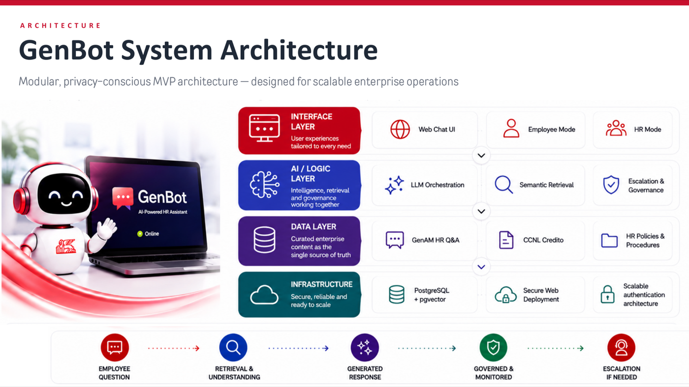

60–80%
Riduzione delle richieste ripetitive
IL PROBLEMA
I team HR passano ore a rispondere ogni giorno alle stesse domande. Le informazioni sono sparse tra sistemi e documenti diversi, rendendo difficile per i dipendenti ottenere risposte rapide e coerenti.
Richieste ripetitive
L'alto volume di domande ricorrenti consuma il tempo del team HR.
Informazioni frammentate
Policy e procedure sono archiviate in fonti scollegate tra loro.
Esperienza disconnessa
I dipendenti affrontano tempi di risposta lenti e risposte incoerenti.
LA MIA SOLUZIONE
GenBot è un assistente HR basato su IA che combina la Retrieval-Augmented Generation (RAG) con la conoscenza aziendale ufficiale per fornire risposte accurate, sicure e immediate.
Domanda
Il dipendente pone una domanda in linguaggio naturale.
Recupero
GenBot recupera le informazioni rilevanti dalle fonti HR.
Generazione
L'IA genera una risposta accurata e consapevole del contesto.
Consegna
La risposta arriva subito, con riferimenti alle fonti.
60–80%
Riduzione dello sforzo manuale
92%
Domande risolte automaticamente
24/7
Disponibilità per tutti i dipendenti
4.8/5
Soddisfazione dei dipendenti
PANORAMICA DELL'ARCHITETTURA
Un'architettura sicura e scalabile che collega i dipendenti a una conoscenza HR affidabile attraverso recupero intelligente e IA.
COMPONENTI CHIAVE
- Canali sicuri (Web, Teams, Email)
- Comprensione della query e rilevamento dell'intento
- Retrieval-Augmented Generation (RAG)
- HR Knowledge Base (policy, CCNL, procedure)
- Analytics per il miglioramento continuo

PERCHÉ È IMPORTANTE
Esperienza dipendente
Accesso 24/7 a informazioni chiare e affidabili di cui fidarsi.
Efficienza operativa
Risposte rapide, accurate e coerenti basate su fonti ufficiali.
Governance e fiducia
Workflow tracciabili e supervisionati da persone, con citazioni chiare.
TECNOLOGIE E METODI
Claude · LLMs
RAG
NLP
React
TypeScript
PostgreSQL
pgvector
Supabase
Knowledge Management
Governance dell'IA
HR Analytics
Employee Experience